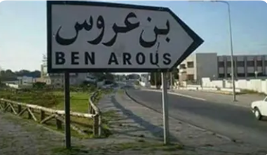
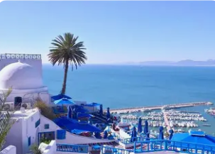
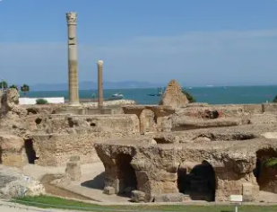
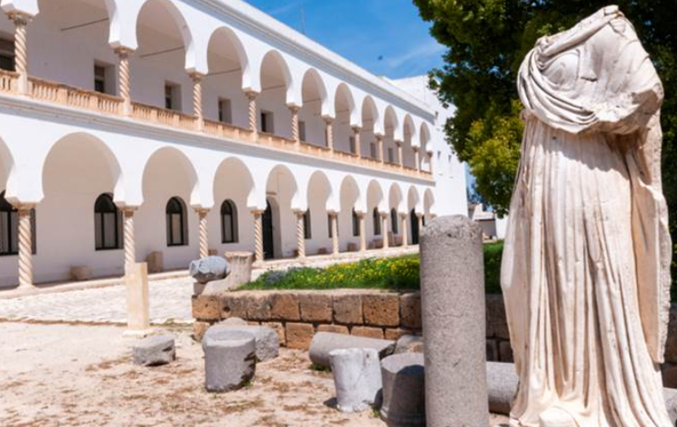

La Porte du Sud de la Capitale

Ben Arous est un gouvernorat situé au sud du Grand Tunis, bordé par le golfe de Tunis à l'est. C'est une région stratégique qui combine développement industriel, zones résidentielles et littoral méditerranéen.
La ville de Ben Arous, chef-lieu du gouvernorat, est un centre urbain en pleine expansion avec une importante activité économique et industrielle. Le gouvernorat abrite également les villes côtières d'Ezzahra, Radès et La Marsa.
Le gouvernorat se distingue par son dynamisme économique avec ses zones industrielles, son patrimoine antique riche notamment à Carthage, et ses stations balnéaires prisées comme La Marsa et Gammarth.
Abrite le site archéologique légendaire de Carthage, classé UNESCO, ancienne capitale de l'Empire carthaginois et l'une des plus grandes cités de l'Antiquité.
Zone industrielle majeure avec de nombreuses entreprises dans les secteurs textile, mécanique, agroalimentaire et électronique, contribuant fortement à l'économie nationale.
Stations balnéaires huppées comme La Marsa, Gammarth et Sidi Bou Saïd, destinations prisées pour leurs plages, leurs cafés et leur atmosphère méditerranéenne.
Abrite le Palais Présidentiel de Carthage, siège officiel du président de la République tunisienne, symbole du pouvoir politique du pays.

Village pittoresque perché sur une falaise, célèbre pour ses maisons blanches et bleues, ses portes cloutées et ses ruelles pavées. Lieu d'inspiration pour de nombreux artistes et écrivains.

Gigantesques thermes romains du IIe siècle, parmi les plus grands de l'Empire romain. Seules quelques colonnes subsistent, mais elles témoignent de la grandeur monumentale de l'édifice antique.

Situé sur la colline de Byrsa, ce musée présente une riche collection d'objets puniques, romains et paléochrétiens. Il offre également une vue panoramique exceptionnelle sur le golfe de Tunis.